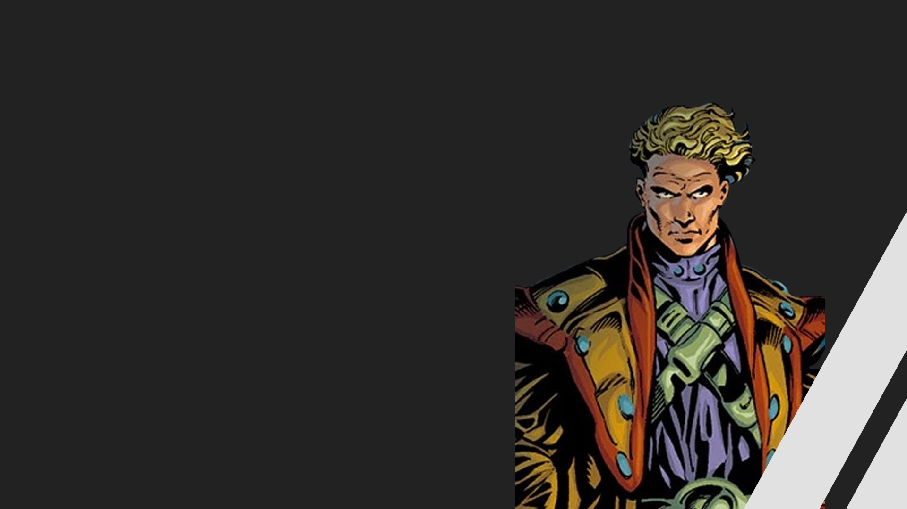
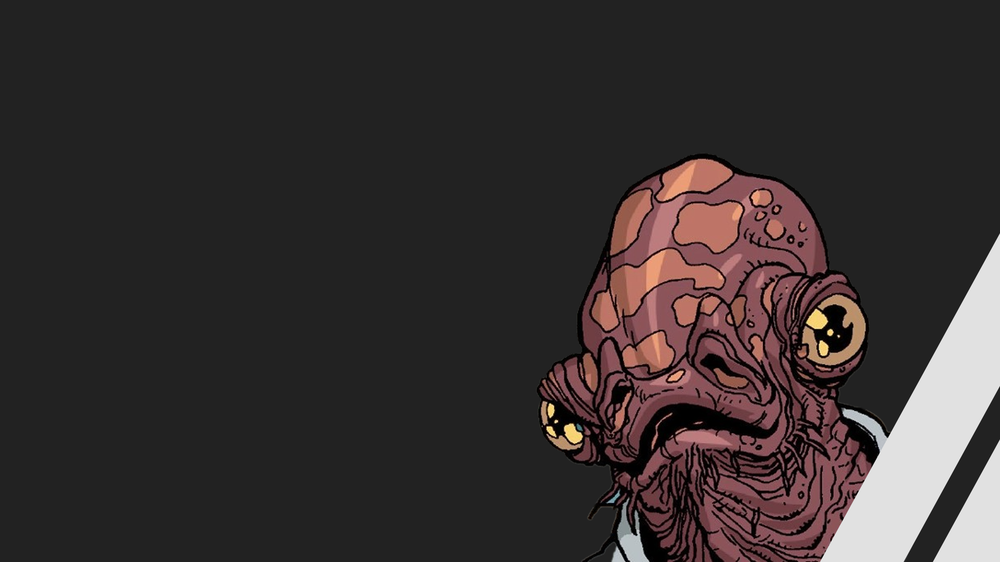
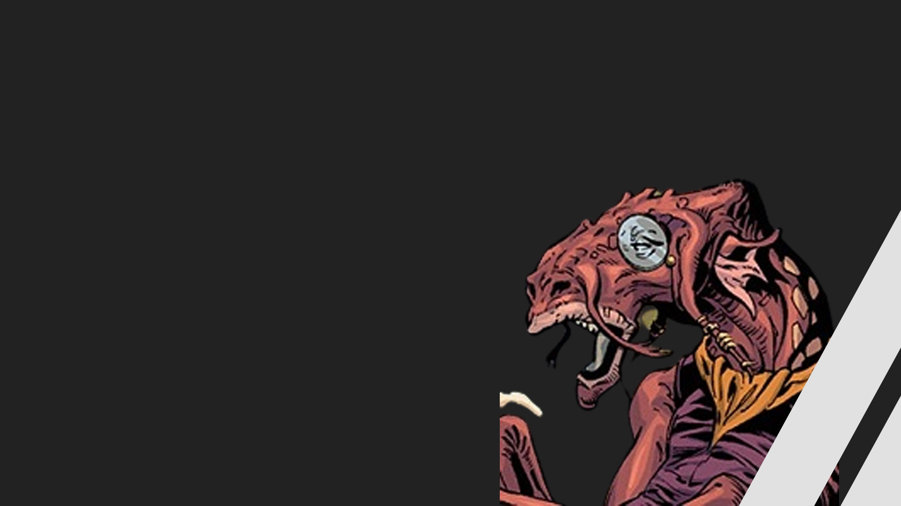
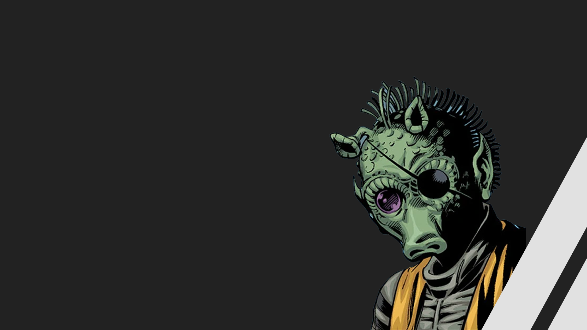
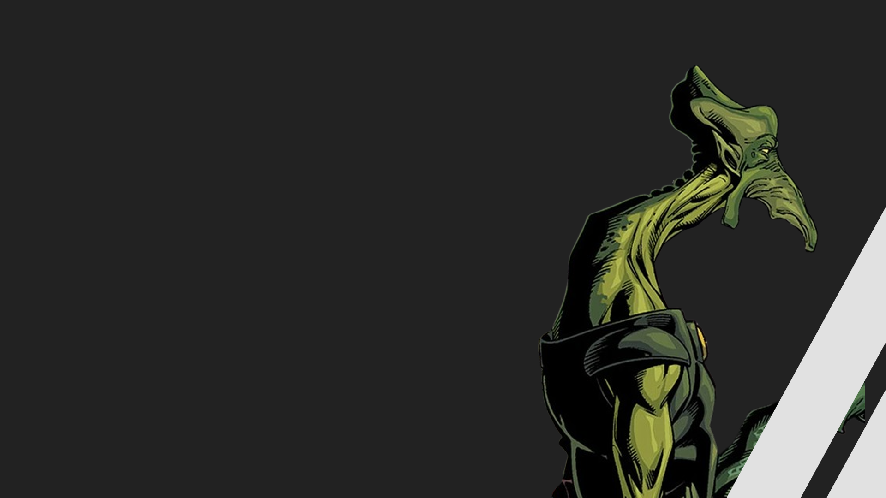

.png)
Sol Negro
O que é?
Sol Negro foi uma organização criminosa que esteve ativa fortemente durante as Guerras Clônicas como uma força dentre os principais sindicatos do crime da galáxia, formando em dado momento do conflito uma coalizão com a organização Mandaloriana Olho da Morte, o Sindicato Pyke e o Cartel Hutt, acarretando na formação da Sombra Coletiva.
Principais integrantes

Alexi
Alexi
Garyn
Alexi Garyn foi um membro Humano do sindicato criminal do Sol Negro. Servindo como um Vigo durante décadas, Garyn eventualmente atingiu a posição de Sub-lorde, a maior posição na organização. Liderando os Vigos nos anos antecedentes ao retorno da Ordem dos Lordes Sith.

Morn
Morn era um Mon Calamari masculino membro do sindicato criminoso Sol Negro. Tendo alcançado o posto de Vigo , Morn baseou-se em seu planeta natal, Dac , e supervisionou as operações do Sol Negro naquele setor da galáxia. Seu assassinato foi o primeiro movimento da destruição da liderança de Sol Negro por Maul.

Darnada
Darnada era um Dug membro masculino do sindicato criminoso Sol Negro e o proprietário da Deep Space Demolition and Removal . Servindo como um dos nove vigos sob a liderança de Alexi Garyn , Darnada ajudou nas operações de Black Sun através da galáxia e trabalhou em sua estação espacial por anos até sua execução.

Dardo
Dardo era um membro Rodiano masculino do sindicato criminoso Sol Negro . Tendo alcançado o posto de Vigo , Dardo e o resto da liderança do Sol Negro foram brutalmente massacrados durante um ataque do Sith Darth Maul em 33 ABY.

Nep Chung
Nep Chung se envolveu na organização criminosa Black Sun , subindo na hierarquia e alcançando o título de Vigo , tornando-o um dos nove tenentes do sindicato. Para protegê-lo, Chung contratou guarda-costas para garantir sua segurança, incluindo um guarda pessoal de sua própria espécie.